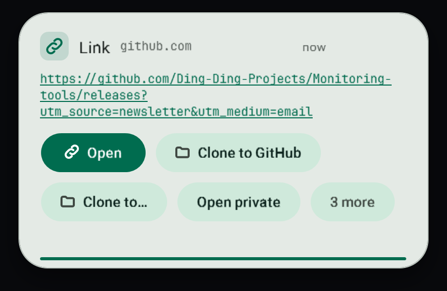

LIVE release v1.0.57
Your PC,
watched quietly.
A Windows tray app that shows what you copied, tells you why the internet dropped, and turns a copied path into a finished conversion.
Download for Windowsv1.0.57 · Windows x64 · install it on your PC
Read the docsThis site explains and downloads the app. It is not the app.


I want to…
All
Files
Clipboard
Network
Search
FilesConvert a video, picture or songCopy its path with :mp4 and the new file lands beside it.
NetworkWork out why the internet droppedAdapter, router, DNS, then the wider internet.
ClipboardGet back something I copiedThe history keeps text, links, files and images.